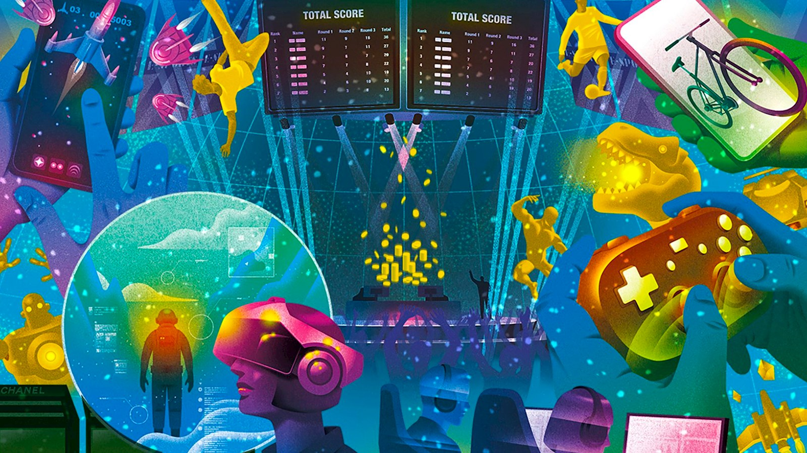

1-home(what is gaming)
Gaming is bigger than ever. The games industry is now larger than both cinema and music, and with the advent of mobile gaming, more people are playing games than ever before. However, the appeal of gaming is still a mystery for many people. Some of you will have played games when they were younger, but let the hobby fall by the wayside. Some of you will have never picked up a game in your life. So what’s the fuss about? What does the landscape of gaming looks like in 2017 and why are so many people playing them?
about(Who plays games?)
|
According to GameTrack (Q4 2016) 18 million people in the UK play games – this equates to around 38% of everyone in the 6-64 age bracket. Gamers are often imagined as adolescent males, but statistics show that this demographic (males ages 15-24) make up just 16% of the overall audience. In fact, 43% of UK gamers are female and audience is split fairly evenly across age groups. This diversification in audience is partially due to the rise of mobile gaming. Whereas games used to be tied to bespoke hardware, they are now easily accessible through mobile devices and tablets. This has opened games up to a larger variety of people, and has secured its own place in the market with big-hitters such as Candy Crush Saga and Pokémon GO. Interestingly, not everyone that plays games on mobile would consider themselves to be “gamers”. In fact, this shift has created a divide between “casual (mobile) gamers” and self-proclaimed “real gamers” who play on PC and consoles. Although audiences are diversifying, the games industry is dominated by male developers and often caters to a presumed heterosexual male audience. Unfortunately this often leads to over-sexualised female characters and a distinct lack of non-male, non-white characters to play as. These issues were called into question with 2014’s “Gamergate” controversy and thankfully many games developers have since made efforts to provide more diverse experiences and options for their audiences |
 |
work(How do they play them?)
Games consoles are dedicated machines intended for home use. If you’ve ever played an atari ,Sega Megadrive , Nintendo 64 or SNES then that’s the kind of machine we’re talking about. The biggest players in the console market are Sony, Microsoft and Nintendo – whose current models are Playstation 4, Xbox One and Nintendo Switch (respectively). Additionally you have Nintendo’s 3DS and Sony’s Playstation Vita, which are commonly referred to as “handhelds” and are essentially miniature games consoles designed to be played on the go.